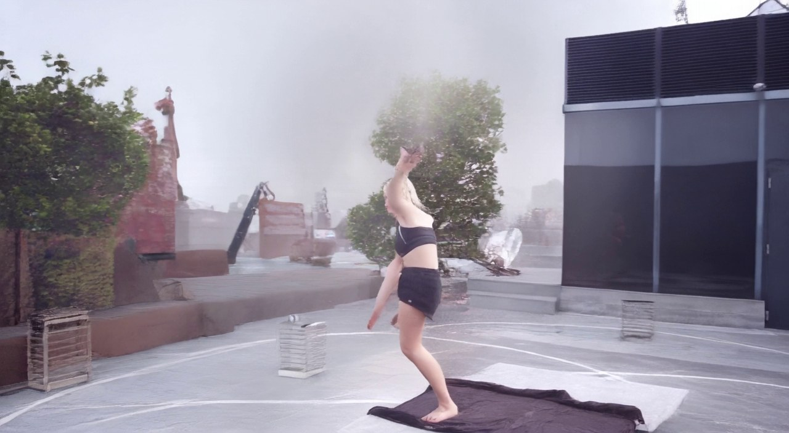

Stage3 +60° 统一案例审查
共同案例 case13 f845–f865，完整 21 帧。每行展示同一基线和该方案 Stage3 整片；模型与条件不同，不按单个模块归因。静态背景会稀释全画面帧差，请同时看人物接缝、脸手、脚接地、动作和新视角身份。均未重新训练；尚无方案通过整片验收。
| 方案与论文／源码 | 相对第一版具体改了什么 | Stage3 效果与 21 帧结果 |
|---|---|---|
| 共同输入与基模基线：Wan2.2 TI2V-5B＋DepthDirector LoRA；扩展：VACE-1.3B、SVD-XT＋MimicMotion、UnityVideo 等官方预训练模型；部分行叠加官方 rembg 与 LaMa 后处理。 | 原片与时段：case13 原片 f845–f865，整段 21 帧。 共同 Stage2 图：case13 f845 右绕 +60° 新末帧。MimicMotion 以它作参考图，第 0 帧硬锁定；VACE 将其作控制起点但可重绘；后处理使用同一 Stage2 图。 原动作整段 21 帧；各模型的分辨率、条件输入及基模不同，同表只供画面审核，不把差异归因于单个模块。 输入局限：新首帧虽有明显视角变化，但原片的抬膝姿态变弱；请重点看 Stage3 起步接缝和后段动作。 |  右图是所有可比方案共用的实际 Stage3 输入首帧；独立模型不读取它。 查看原片对应帧与新末帧并排对照 |
| 关节热图与运动残差投影关节时间残差 beta 0.5case13 · f845 目标视角轨迹来源：本地改法；基于 DepthDirector | 本地改法：在 DD 的源动作条件里，把投影关节附近的逐帧位移残差加权 0.5，希望手臂跟上目标机位；没有移植一篇完整论文，也没有重训。 | 五帧抽查：后段前伸腿比基线明显，但人物和手部出现拉伸、模糊。 |
| 关节热图与运动残差投影关节时间残差 beta 1.0case13 · f845 目标视角轨迹来源：本地改法；基于 DepthDirector | 同一关节残差改法，把权重由 0.5 增至 1.0，测试更强的动作提示；其余输入不变，没有重训。 | 五帧抽查：残差加大后人物中后段严重拖影、局部消失，效果退化。 |
| 原生参数（角度、时长、CFG、控制强度）原生 DD CFG 1.5来源：DepthDirector（基模论文） | 只把 DD 原生 CFG 从第一版的 1.0 改为 1.5；共同首帧、源片、+60° 机位、21 帧长度和随机种子不变，没有重训。 | 五帧抽查：抬腿略连贯，整体接近基线；脸手仍软，未见决定性改善。 共同输入为本页首行 +60° Stage2 末帧；只播放 Stage3 完整 21 帧。 |
| 原生参数（角度、时长、CFG、控制强度）原生 DD CFG 2.0来源：DepthDirector（基模论文） | 仅把 DD 原生 CFG 从基线 1.0 提高到 2.0；共用 +60° Stage2 末帧、源片、相机、种子 42 和 21 帧长度，没有重训。 | 五帧抽查：与基线动作和背景接近，额外引导没有明显恢复高踢。 共同输入为本页首行 +60° Stage2 末帧；只播放 Stage3 完整 21 帧。 |
| 原生参数（角度、时长、CFG、控制强度）原生 DD CFG 2.5来源：DepthDirector（基模论文） | 仅把 DD 原生 CFG 从基线 1.0 提高到 2.5；共用 +60° Stage2 末帧、源片、相机、种子 42 和 21 帧长度，没有重训。 | 五帧抽查：动作与 CFG 2.0 接近，后段高踢仍不足。 共同输入为本页首行 +60° Stage2 末帧；只播放 Stage3 完整 21 帧。 |
| 人体区域加权短训练六步短训练适配器 · +60°来源：本地训练损失改法；基于 DepthDirector | 本地训练实验：让 DD 的短训练损失更重视人物、关节和运动区域；已有其他案例试验，但尚未在本表统一的 f845 输入生成本版，不能报效果。 | 五帧抽查：人物和背景接近基线，短训练没有带来明显动作增益。 共同输入为本页首行 +60° Stage2 末帧；只播放 Stage3 完整 21 帧。 |
| Wan-Move 轨迹特征模块Wan-Move 官方轨迹函数 α0.35来源：Wan-Move: Motion-controllable Video Generation via Latent Trajectory Guidance | 调用 Wan-Move 源码中的轨迹位置图与特征替换函数，用源片实测的密集轨迹传播人物首帧特征；只接入这两个模块，没有移植完整 Wan-Move 模型，也没有重训。 | 五帧抽查：与基线的腿部走势接近，仍未解决后段抬腿不足。 共同输入为本页首行 +60° Stage2 末帧；只播放 Stage3 完整 21 帧。 |
| Motion-I2V ForwardWarpMotion-I2V ForwardWarp α0.35来源：Motion-I2V: Consistent and Controllable Image-to-Video Generation with Explicit Motion Modeling | 调用 Motion-I2V 源码中的 ForwardWarp，用源片实测的密集轨迹前向搬运人物首帧特征；没有接入论文的运动预测网络和完整时序架构，没有重训。 | 五帧抽查：与基线几乎同走势，未见明显动作或清晰度改进。 共同输入为本页首行 +60° Stage2 末帧；只播放 Stage3 完整 21 帧。 |
| FlashMotion 预训练适配器FlashMotion SlowAdapter α0.3来源：FlashMotion: Few-Step Controllable Video Generation with Trajectory Guidance | 把 FlashMotion 官方预训练 SlowAdapter 接到 DD，并用目标机位的仿射人体剪影提示动作；这是适配器接入实验，不是完整 FlashMotion 推理链，没有重训。 | 五帧抽查：轮廓较稳，但后段腿部运动更小，未优于基线。 共同输入为本页首行 +60° Stage2 末帧；只播放 Stage3 完整 21 帧。 |
| TTM 双时钟去噪TTM 双时钟 · 强约束 7 步来源：Time-to-Move: Training-Free Motion-Controlled Video Generation via Dual-Clock Denoising | 按 TTM 官方代码接入时间掩码和双时钟去噪，让强运动时更关注目标机位控制；适配到 DD 基模，未运行原论文完整模型，没有重训。 | 五帧抽查：人物较稳，后段踢腿幅度依然不足。 共同输入为本页首行 +60° Stage2 末帧；只播放 Stage3 完整 21 帧。 |
| Depth ControlNetDepth ControlNet · DD 目标深度 0.5 · case13 f845来源：Wan2.2 Controlnet（官方源码） | 把 Wan2.2 Controlnet 官方 Depth 权重接到 DD，以目标视角深度图约束人物与场景布局；没有重训。 | 五帧抽查：人体与背景明显拖影，画面出现大面积灰白，效果退化。 共同输入为本页首行 +60° Stage2 末帧；只播放 Stage3 完整 21 帧。 |
| Tile ControlNetTile ControlNet · warp 0.2 · case13 f845来源：Wan2.2 Controlnet（官方源码） | 把 Wan2.2 Controlnet 官方 Tile 权重接到 DD，用目标视角纹理图约束局部外观；没有重训。 | 五帧抽查：腿部动作减弱，背景出现亮块，未改善整片。 共同输入为本页首行 +60° Stage2 末帧；只播放 Stage3 完整 21 帧。 |
| HED ControlNetHED ControlNet · warp 0.5 · case13 f845来源：Wan2.2 Controlnet（官方源码） | 把 Wan2.2 Controlnet 官方 HED 边缘预处理与权重接到 DD，用柔和边缘约束目标视角轮廓；没有重训。 | 五帧抽查：后段有腿部伸展，但楼顶场景明显变样，不能通过一致性审查。 共同输入为本页首行 +60° Stage2 末帧；只播放 Stage3 完整 21 帧。 |
| Canny ControlNetCanny ControlNet · warp 0.5 · case13 f845来源：Wan2.2 Controlnet（官方源码） | 把 Wan2.2 Controlnet 官方 Canny 权重接到 DD，用目标视角硬边缘约束结构；没有重训。 | 五帧抽查：出现大面积亮白覆盖和人形漂移，效果退化。 共同输入为本页首行 +60° Stage2 末帧；只播放 Stage3 完整 21 帧。 |
| LaMa 修补＋TileLaMa 背景修补＋Tile 0.2来源：Resolution-robust Large Mask Inpainting with Fourier Convolutions（LaMa）；Wan2.2 Controlnet（Tile 源码） | 先用 LaMa 官方模型补目标视角控制图中的背景空洞，再接 Wan2.2 Controlnet 的 Tile 权重约束外观；没有重训。 | 五帧抽查：腿部运动仍在，但人物偏软、背景留亮块，未明显优于基线。 共同输入为本页首行 +60° Stage2 末帧；只播放 Stage3 完整 21 帧。 |
| Depth＋Tile 双模块Depth＋Tile 双模块 0.5／0.2来源：Wan2.2 Controlnet（Depth／Tile 源码） | 同时接 Wan2.2 Controlnet 官方 Depth 和 Tile 权重，让几何布局与局部外观一起约束 DD；没有重训。 | 五帧抽查：后段动作趋小，背景有竖向亮块，组合未带来收益。 共同输入为本页首行 +60° Stage2 末帧；只播放 Stage3 完整 21 帧。 |
| NLF 三维人体＋FlashMotionNLF 三维人体＋FlashMotion α0.3来源：Neural Localizer Fields for Continuous 3D Human Pose and Shape Estimation；FlashMotion（SlowAdapter 源码） | 先用 NLF 官方模型估计三维人体并投影成 +60° 剪影，再把剪影送入 FlashMotion 官方 SlowAdapter 约束 DD；两个模块组合，未重训。 | 五帧抽查：中后段人体糊成一团，姿态明显崩坏。 共同输入为本页首行 +60° Stage2 末帧；只播放 Stage3 完整 21 帧。 |
| VideoX-Fun 官方 5B Control＋Ref共同 Stage2 首帧＋目标视角关节 · 21 帧来源：VideoX-Fun 官方源码与 Wan2.2-Fun-5B-Control 权重 | 官方 5B Control＋Reference 模型直接推理：输入同一 +60° Stage2 末帧，以源片 DWPose＋Pi3X 深度投影得到的 21 帧目标视角骨架控制动作；没有重训。它与 DD 基线共起点，但基模和动作条件不同。 | 五帧抽查：人物和场景较稳，但后段近乎站立，没有跟上目标踢腿。 共同输入为本页首行 +60° Stage2 末帧；只播放 Stage3 完整 21 帧。 |
| VideoX-Fun 官方 5B Control＋Ref · Canny来源：VideoX-Fun 官方源码与原始预训练权重；仅调整本行描述中的控制或参数。 | 以新机位 DD warp 的官方 Canny 边缘视频作为 21 帧控制；首帧、参考图、模型和种子与关节版相同。 | 五帧抽查：动作较活跃，但后段人物形体漂移，背景出现紫色伪影。 共同输入为本页首行 +60° Stage2 末帧；只播放 Stage3 完整 21 帧。 |
| VideoX-Fun 官方 5B Control＋Ref · 深度来源：VideoX-Fun 官方源码与原始预训练权重；仅调整本行描述中的控制或参数。 | 以新机位 DD 深度反映射后的 21 帧近亮远暗控制视频驱动；首帧、参考图、模型和种子与关节版相同。 | 五帧抽查：人物稳定却几乎站立不动，深度控制未恢复舞蹈。 共同输入为本页首行 +60° Stage2 末帧；只播放 Stage3 完整 21 帧。 |
| VideoX-Fun 官方 5B Control＋Ref · LaMa 修补 warp来源：VideoX-Fun 官方源码与原始预训练权重；仅调整本行描述中的控制或参数。 | 以 LaMa 修补的新机位 warp 视频作为 21 帧控制；该控制超出官方典型 pose/depth/canny 分布，属探索性试验。 | 五帧抽查：人物出现明显前移和后伸腿，但动作偏离原舞蹈且局部形变。 共同输入为本页首行 +60° Stage2 末帧；只播放 Stage3 完整 21 帧。 |
| VideoX-Fun 官方 5B Control＋Ref · 首帧姿态对齐来源：VideoX-Fun 官方源码与原始预训练权重；仅调整本行描述中的控制或参数。 | 把控制第 0 帧匹配真实 Stage2 姿态，前 6 帧平滑过渡到目标机位投影动作，测试是否修复起步姿态冲突。 | 五帧抽查：首帧姿态对齐，后段仍近乎站立，未恢复高踢。 共同输入为本页首行 +60° Stage2 末帧；只播放 Stage3 完整 21 帧。 |
| VideoX-Fun 官方 5B Control＋Ref · 关节控制 CFG 9来源：VideoX-Fun 官方源码与原始预训练权重；仅调整本行描述中的控制或参数。 | 与关节控制版使用完全相同的控制视频和首帧，只把官方引导强度从 6 提到 9，测试动作遵循程度。 | 五帧抽查：提高引导后仍近乎站立，较原关节版没有明显增益。 共同输入为本页首行 +60° Stage2 末帧；只播放 Stage3 完整 21 帧。 |
| VideoX-Fun 官方 5B Control＋Ref · 首帧＋关节、无额外参考图来源：VideoX-Fun 官方源码与原始预训练权重；仅调整本行描述中的控制或参数。 | 保留相同 Stage2 start_image 和关节控制，只去掉重复的 ref_image，测试额外参考是否抑制动作。 | 五帧抽查：去掉额外参考图后人物仍近乎站立，没有恢复目标踢腿。 共同输入为本页首行 +60° Stage2 末帧；只播放 Stage3 完整 21 帧。 |
| VideoX-Fun 官方 5B Control＋Ref · 动作显式提示 · 种子 43来源：VideoX-Fun 官方源码与原始预训练权重；仅调整本行描述中的控制或参数。 | 相同首帧、关节控制和官方权重；提示词明确描述抬膝、前踢和摆臂，测试语义约束能否恢复动作。 | 五帧抽查：明确写出抬膝、前踢和摆臂后，手臂略有变化，但腿仍近乎站立。 共同输入为本页首行 +60° Stage2 末帧；只播放 Stage3 完整 21 帧。 |
| VideoX-Fun 官方 5B Control＋Ref · 动作显式提示 · 种子 1234来源：VideoX-Fun 官方源码与原始预训练权重；仅调整本行描述中的控制或参数。 | 与上一行只改随机种子，检查动作失败是否由单次采样偶然造成。 | 五帧抽查：同一动作提示换种子后，人物仍未完成原片的高踢。 共同输入为本页首行 +60° Stage2 末帧；只播放 Stage3 完整 21 帧。 |
| VideoX-Fun 官方 5B Control＋Ref · 动作显式提示 · 种子 7777来源：VideoX-Fun 官方源码与原始预训练权重；仅调整本行描述中的控制或参数。 | 与上一行只改随机种子，再次检查动作失败是否由采样偶然造成。 | 五帧抽查：另一随机种子有不同摆臂，腿部仍未跟随目标高踢。 共同输入为本页首行 +60° Stage2 末帧；只播放 Stage3 完整 21 帧。 |
| VideoX-Fun 官方 5B Control＋Ref · 二维贴片整片控制来源：VideoX-Fun 官方源码与原始预训练权重；仅调整本行描述中的控制或参数。 | 用完整 21 帧二维动作贴片作为官方 VideoX-Fun 5B Control＋Ref 控制视频；起始图和参考图仍为共同 Stage2 末帧，测试生成模型能否修复贴片外观并保住高踢。 | 五帧抽查：人物运动幅度变大、背景较稳，但未跟住原片高踢；衣服出现白块，后段人物转身漂移。 共同输入为本页首行 +60° Stage2 末帧；只播放 Stage3 完整 21 帧。 |
| VideoX-Fun 官方 5B Control＋Ref · 二维贴片控制＋首帧渐变来源：VideoX-Fun 官方源码与原始预训练权重；仅调整本行描述中的控制或参数。 | 与整片控制版相同，只把控制视频前 5 帧从共同 Stage2 末帧渐变到二维贴片，测试控制首帧冲突。 | 五帧抽查：控制首帧对齐后仍未恢复高踢；后段人物弯腰、衣服白块，未优于原样控制。 共同输入为本页首行 +60° Stage2 末帧；只播放 Stage3 完整 21 帧。 |
| 二维动作贴片 · DWPose＋NLF 目标位置（诊断）官方 DWPose 和 NLF 估计；本地 GrabCut／仿射贴片。非生成模型。 | 原片 DWPose/GrabCut 人体贴到共同 Stage2 末帧的 LaMa 背景，按官方 NLF 目标轮廓位置对齐；第 14、15 帧目标框插值。非生成模型，非真实新视角重建。 | 五帧抽查：原片高踢明显保留，但人物仍朝原机位，首帧位置、脚下接缝和人物边缘不自然；只是二维诊断，不通过真实新视角验收。 共同 Stage2 末帧用于背景；人物来自原片二维贴片。完整 21 帧，仅作动作保真上限诊断。 |
| Wan2.2 Tile ControlNet＋DepthDirector · 原始二维动作贴片 · 权重 0.05来源：TheDenk/wan2.2-controlnet 官方预训练权重；控制残差注入 DepthDirector 推理。 | 将完整 21 帧原始二维动作贴片送入官方预训练 Wan2.2 Tile ControlNet，按 0.05 强度注入 DD；共同 Stage2 首帧、相机与基模不变，不重新训练。 | 五帧抽查：人物略有屈膝，背景较稳，但后段没有原片高踢，未明显优于基线。 共同 Stage2 末帧用于背景；人物来自原片二维贴片。完整 21 帧，仅作动作保真上限诊断。 |
| Wan2.2 Tile ControlNet＋DepthDirector · 原始二维动作贴片 · 权重 0.1来源：TheDenk/wan2.2-controlnet 官方预训练权重；控制残差注入 DepthDirector 推理。 | 将完整 21 帧原始二维动作贴片送入官方预训练 Wan2.2 Tile ControlNet，按 0.1 强度注入 DD；共同 Stage2 首帧、相机与基模不变，不重新训练。 | 完整 21 帧复查：中后段有轻微屈膝，仍没有原片高踢；动作与基线接近。 共同 Stage2 末帧用于背景；人物来自原片二维贴片。完整 21 帧，仅作动作保真上限诊断。 |
| Wan2.2 Tile ControlNet＋DepthDirector · 原始二维动作贴片 · 权重 0.3来源：TheDenk/wan2.2-controlnet 官方预训练权重；控制残差注入 DepthDirector 推理。 | 将完整 21 帧原始二维动作贴片送入官方预训练 Wan2.2 Tile ControlNet，按 0.3 强度注入 DD；共同 Stage2 首帧、相机与基模不变，不重新训练。 | 五帧抽查：人物逐渐接近站立，抬腿比低强度版更弱，没有改善目标动作。 共同 Stage2 末帧用于背景；人物来自原片二维贴片。完整 21 帧，仅作动作保真上限诊断。 |
| Wan2.2 Tile ControlNet＋DepthDirector · 原始二维动作贴片 · 权重 0.5来源：TheDenk/wan2.2-controlnet 官方预训练权重；控制残差注入 DepthDirector 推理。 | 将完整 21 帧原始二维动作贴片送入官方预训练 Wan2.2 Tile ControlNet，按 0.5 强度注入 DD；共同 Stage2 首帧、相机与基模不变，不重新训练。 | 五帧抽查：人物衣服和腿部出现破碎、拖影，后段姿态退化。 共同 Stage2 末帧用于背景；人物来自原片二维贴片。完整 21 帧，仅作动作保真上限诊断。 |
| Wan2.2 Tile ControlNet＋DepthDirector · 首帧渐变动作贴片 · 权重 0.1来源：TheDenk/wan2.2-controlnet 官方预训练权重；控制残差注入 DepthDirector 推理。 | 将完整 21 帧首帧渐变动作贴片送入官方预训练 Wan2.2 Tile ControlNet，按 0.1 强度注入 DD；共同 Stage2 首帧、相机与基模不变，不重新训练。 | 五帧抽查：起步渐变后人物有位移，后段出现圆形背景伪影，仍没有原片高踢。 共同 Stage2 末帧用于背景；人物来自原片二维贴片。完整 21 帧，仅作动作保真上限诊断。 |
| Wan2.2 Tile ControlNet＋DepthDirector · 首帧渐变动作贴片 · 权重 0.2来源：TheDenk/wan2.2-controlnet 官方预训练权重；控制残差注入 DepthDirector 推理。 | 将完整 21 帧首帧渐变动作贴片送入官方预训练 Wan2.2 Tile ControlNet，按 0.2 强度注入 DD；共同 Stage2 首帧、相机与基模不变，不重新训练。 | 五帧抽查：中段有运动，后段站立且人物拖影，没有恢复目标高踢。 共同 Stage2 末帧用于背景；人物来自原片二维贴片。完整 21 帧，仅作动作保真上限诊断。 |
| Wan2.2 Tile ControlNet＋DepthDirector · 首帧渐变动作贴片 · 权重 0.3来源：TheDenk/wan2.2-controlnet 官方预训练权重；控制残差注入 DepthDirector 推理。 | 将完整 21 帧首帧渐变动作贴片送入官方预训练 Wan2.2 Tile ControlNet，按 0.3 强度注入 DD；共同 Stage2 首帧、相机与基模不变，不重新训练。 | 五帧抽查：中后段人体明显拖影和形变，目标动作仍未恢复。 共同 Stage2 末帧用于背景；人物来自原片二维贴片。完整 21 帧，仅作动作保真上限诊断。 |
| Wan2.2 Canny ControlNet＋DepthDirector · 原始二维贴片边缘 · 权重 0.05来源：TheDenk/wan2.2-controlnet 官方预训练权重和官方 Canny 检测器；控制残差注入 DepthDirector 推理。 | 用官方 Canny 检测器把完整 21 帧原始二维贴片边缘转成黑白控制，再把官方预训练 Canny ControlNet 按 0.05 强度注入 DD；共同 Stage2 首帧、相机与基模不变，不重新训练。 | 五帧抽查：人物仍只轻微屈膝，后段原片高踢缺失，整体接近基线。 共同 Stage2 末帧用于背景；人物来自原片二维贴片。完整 21 帧，仅作动作保真上限诊断。 |
| Wan2.2 Canny ControlNet＋DepthDirector · 原始二维贴片边缘 · 权重 0.1来源：TheDenk/wan2.2-controlnet 官方预训练权重和官方 Canny 检测器；控制残差注入 DepthDirector 推理。 | 用官方 Canny 检测器把完整 21 帧原始二维贴片边缘转成黑白控制，再把官方预训练 Canny ControlNet 按 0.1 强度注入 DD；共同 Stage2 首帧、相机与基模不变，不重新训练。 | 五帧抽查：背景保持大致稳定，人物轻微屈膝，但没有恢复后段高踢。 共同 Stage2 末帧用于背景；人物来自原片二维贴片。完整 21 帧，仅作动作保真上限诊断。 |
| Wan2.2 Canny ControlNet＋DepthDirector · 原始二维贴片边缘 · 权重 0.2来源：TheDenk/wan2.2-controlnet 官方预训练权重和官方 Canny 检测器；控制残差注入 DepthDirector 推理。 | 用官方 Canny 检测器把完整 21 帧原始二维贴片边缘转成黑白控制，再把官方预训练 Canny ControlNet 按 0.2 强度注入 DD；共同 Stage2 首帧、相机与基模不变，不重新训练。 | 五帧抽查：人物略有弯膝和摆臂，后段高踢仍缺失，没有明显优于基线。 共同 Stage2 末帧用于背景；人物来自原片二维贴片。完整 21 帧，仅作动作保真上限诊断。 |
| Wan2.2 Canny ControlNet＋DepthDirector · 原始二维贴片边缘 · 权重 0.3来源：TheDenk/wan2.2-controlnet 官方预训练权重和官方 Canny 检测器；控制残差注入 DepthDirector 推理。 | 用官方 Canny 检测器把完整 21 帧原始二维贴片边缘转成黑白控制，再把官方预训练 Canny ControlNet 按 0.3 强度注入 DD；共同 Stage2 首帧、相机与基模不变，不重新训练。 | 五帧抽查：后段人物逐渐站直，动作幅度减弱，未改善高踢。 共同 Stage2 末帧用于背景；人物来自原片二维贴片。完整 21 帧，仅作动作保真上限诊断。 |
| Wan2.2 Canny ControlNet＋DepthDirector · 原始二维贴片边缘 · 权重 0.5来源：TheDenk/wan2.2-controlnet 官方预训练权重和官方 Canny 检测器；控制残差注入 DepthDirector 推理。 | 用官方 Canny 检测器把完整 21 帧原始二维贴片边缘转成黑白控制，再把官方预训练 Canny ControlNet 按 0.5 强度注入 DD；共同 Stage2 首帧、相机与基模不变，不重新训练。 | 五帧抽查：中后段人物严重溶解、几乎消失，效果明显退化。 共同 Stage2 末帧用于背景；人物来自原片二维贴片。完整 21 帧，仅作动作保真上限诊断。 |
| Wan2.2 Canny ControlNet＋DepthDirector · 首帧渐变贴片边缘 · 权重 0.1来源：TheDenk/wan2.2-controlnet 官方预训练权重和官方 Canny 检测器；控制残差注入 DepthDirector 推理。 | 用官方 Canny 检测器把完整 21 帧首帧渐变贴片边缘转成黑白控制，再把官方预训练 Canny ControlNet 按 0.1 强度注入 DD；共同 Stage2 首帧、相机与基模不变，不重新训练。 | 五帧抽查：首帧渐变仍只得到轻微屈膝，后段没有原片高踢。 共同 Stage2 末帧用于背景；人物来自原片二维贴片。完整 21 帧，仅作动作保真上限诊断。 |
| Wan2.2 Canny ControlNet＋DepthDirector · 首帧渐变贴片边缘 · 权重 0.3来源：TheDenk/wan2.2-controlnet 官方预训练权重和官方 Canny 检测器；控制残差注入 DepthDirector 推理。 | 用官方 Canny 检测器把完整 21 帧首帧渐变贴片边缘转成黑白控制，再把官方预训练 Canny ControlNet 按 0.3 强度注入 DD；共同 Stage2 首帧、相机与基模不变，不重新训练。 | 五帧抽查：中后段人物溶解成残影，无法保留动作和人体。 共同 Stage2 末帧用于背景；人物来自原片二维贴片。完整 21 帧，仅作动作保真上限诊断。 |
| MoVieS 动态 3DGS 新视角MoVieS 官方 3DGS · 21 帧来源：MoVieS: Motion-Aware 4D Dynamic View Synthesis in One Second | 运行 MoVieS 官方动态 3DGS 推理：从同一源片抽 13 帧重建，再渲染 +60° 的 21 帧；它不读取 Stage2 末帧，因此只作参考。 | 五帧抽查：画面有大面积黑洞和重影，且不读取 Stage2 首帧。 独立模型按 +60° 目标机位重跑；不读取 Stage2 首帧，不能与同输入方案直接排名。 |
| AnyView 动态新视角AnyView 官方 2B · 21 帧来源：AnyView: Synthesizing Any Novel View in Dynamic Scenes | 运行 AnyView 官方 2B 模型：输入同一源片与 +60° 相机，独立生成 21 帧新视角；它不读取 Stage2 末帧，因此只作参考。 | 五帧抽查：出现与楼顶原景不符的蓝色车等内容，且不读取 Stage2 首帧。 独立模型按 +60° 目标机位重跑；不读取 Stage2 首帧，不能与同输入方案直接排名。 |
| Wan VACE 官方预训练推理姿态·固定首帧源码：DiffSynth-Studio 官方 v1.1.9 | 关节图，首帧固定；Wan2.1 VACE-1.3B 官方权重，40 步，未重新训练。 | 完整 21 帧复查：后续变红底绿色关节人，失效；二维控制实验尚未证明真实新视角人体。 共同输入为本页首行 +60° Stage2 末帧；只播放 Stage3 完整 21 帧。 |
| Wan VACE 官方预训练推理深度·固定首帧源码：DiffSynth-Studio 官方 v1.1.9 | 深度图，首帧固定；Wan2.1 VACE-1.3B 官方权重，40 步，未重新训练。 | 完整 21 帧复查：后续红青色深度块，人物崩坏；二维控制实验尚未证明真实新视角人体。 共同输入为本页首行 +60° Stage2 末帧；只播放 Stage3 完整 21 帧。 |
| Wan VACE 官方预训练推理二维贴片·固定首帧源码：DiffSynth-Studio 官方 v1.1.9 | 高踢贴片控制，首帧固定；Wan2.1 VACE-1.3B 官方权重，40 步，未重新训练。 | 完整 21 帧复查：高踢仍在，红青伪色严重；二维控制实验尚未证明真实新视角人体。 共同输入为本页首行 +60° Stage2 末帧；只播放 Stage3 完整 21 帧。 |
| Wan VACE 官方预训练推理姿态·全帧生成源码：DiffSynth-Studio 官方 v1.1.9 | 关节图，原控制起点；Wan2.1 VACE-1.3B 官方权重，40 步，未重新训练。 | 完整 21 帧复查：蓝色室内场景，动作不符；二维控制实验尚未证明真实新视角人体。 共同输入为本页首行 +60° Stage2 末帧；只播放 Stage3 完整 21 帧。 诊断：控制首帧不是共同 Stage2 末帧，不参与同起点效果排名。 |
| Wan VACE 官方预训练推理姿态·无额外参考源码：DiffSynth-Studio 官方 v1.1.9 | 首帧固定，去掉额外参考图；Wan2.1 VACE-1.3B 官方权重，40 步，未重新训练。 | 完整 21 帧复查：仍变红底关节人；二维控制实验尚未证明真实新视角人体。 共同输入为本页首行 +60° Stage2 末帧；只播放 Stage3 完整 21 帧。 |
| Wan VACE 官方预训练推理二维贴片·全帧生成源码：DiffSynth-Studio 官方 v1.1.9 | 贴片控制，原控制起点；Wan2.1 VACE-1.3B 官方权重，40 步，未重新训练。 | 完整 21 帧复查：屋顶和高踢清楚，但首帧不对齐；二维控制实验尚未证明真实新视角人体。 共同输入为本页首行 +60° Stage2 末帧；只播放 Stage3 完整 21 帧。 诊断：控制首帧不是共同 Stage2 末帧，不参与同起点效果排名。 |
| Wan VACE 官方预训练推理二维贴片·共同起点源码：DiffSynth-Studio 官方 v1.1.9 | 控制首帧换 Stage2 末帧；Wan2.1 VACE-1.3B 官方权重，40 步，未重新训练。 | 完整 21 帧复查：高踢保留，首两帧突跳；二维控制实验尚未证明真实新视角人体。 共同输入为本页首行 +60° Stage2 末帧；只播放 Stage3 完整 21 帧。 |
| Wan VACE 官方预训练推理二维贴片·五帧过渡源码：DiffSynth-Studio 官方 v1.1.9 | 前五帧从 Stage2 混到贴片；Wan2.1 VACE-1.3B 官方权重，40 步，未重新训练。 | 完整 21 帧复查：起步更平滑，2–3 帧双人重影；二维控制实验尚未证明真实新视角人体。 共同输入为本页首行 +60° Stage2 末帧；只播放 Stage3 完整 21 帧。 |
| Wan VACE 官方预训练推理姿态·共同起点源码：DiffSynth-Studio 官方 v1.1.9 | 关节控制首帧换 Stage2；Wan2.1 VACE-1.3B 官方权重，40 步，未重新训练。 | 完整 21 帧复查：屋顶保留，后段基本站立；二维控制实验尚未证明真实新视角人体。 共同输入为本页首行 +60° Stage2 末帧；只播放 Stage3 完整 21 帧。 |
| Wan VACE 官方预训练推理深度·共同起点源码：DiffSynth-Studio 官方 v1.1.9 | 深度控制首帧换 Stage2；Wan2.1 VACE-1.3B 官方权重，40 步，未重新训练。 | 完整 21 帧复查：变蓝灰建筑块，人物消失；二维控制实验尚未证明真实新视角人体。 共同输入为本页首行 +60° Stage2 末帧；只播放 Stage3 完整 21 帧。 |
| Wan VACE 官方预训练推理二维贴片·种子 1234源码：DiffSynth-Studio 官方 v1.1.9 | 五帧过渡，改随机种子；Wan2.1 VACE-1.3B 官方权重，40 步，未重新训练。 | 完整 21 帧复查：屋顶和高踢保留，脸手边缘偏软；二维控制实验尚未证明真实新视角人体。 共同输入为本页首行 +60° Stage2 末帧；只播放 Stage3 完整 21 帧。 |
| Wan VACE 官方预训练推理二维贴片·种子 7777源码：DiffSynth-Studio 官方 v1.1.9 | 五帧过渡，改随机种子；Wan2.1 VACE-1.3B 官方权重，40 步，未重新训练。 | 完整 21 帧复查：与 1234 相近，起步重影仍在；二维控制实验尚未证明真实新视角人体。 共同输入为本页首行 +60° Stage2 末帧；只播放 Stage3 完整 21 帧。 |
| Wan VACE 官方预训练推理二维贴片·强度 0.5源码：DiffSynth-Studio 官方 v1.1.9 | 五帧过渡，控制强度减半；Wan2.1 VACE-1.3B 官方权重，40 步，未重新训练。 | 完整 21 帧复查：红青色分离、人物溶解；二维控制实验尚未证明真实新视角人体。 共同输入为本页首行 +60° Stage2 末帧；只播放 Stage3 完整 21 帧。 |
| Wan VACE 官方预训练推理二维贴片·强度 1.5源码：DiffSynth-Studio 官方 v1.1.9 | 五帧过渡，控制强度加半；Wan2.1 VACE-1.3B 官方权重，40 步，未重新训练。 | 完整 21 帧复查：高踢保留，贴片方向仍错；二维控制实验尚未证明真实新视角人体。 共同输入为本页首行 +60° Stage2 末帧；只播放 Stage3 完整 21 帧。 |
| Wan VACE 官方预训练推理二维贴片·直接切换源码：DiffSynth-Studio 官方 v1.1.9 | 共同起点直接切贴片，种子 1234；Wan2.1 VACE-1.3B 官方权重，40 步，未重新训练。 | 完整 21 帧复查：高踢保留，首两帧突跳；二维控制实验尚未证明真实新视角人体。 共同输入为本页首行 +60° Stage2 末帧；只播放 Stage3 完整 21 帧。 |
| UnityVideo 官方模块深度→视频源码：UnityVideo | UnityVideo 官方 flow2video，目标机位深度序列，256×256、20 步；不读取 Stage2 首帧。 使用官方预训练模型，未重新训练。 | 完整 21 帧复查：青绿色碎裂场景，人物和屋顶均未保住；整段失败。 共同输入为本页首行 +60° Stage2 末帧；只播放 Stage3 完整 21 帧。 独立诊断：模型未读取共同 Stage2 首帧，不参与同起点排名。 |
| UnityVideo 官方模块骨架→视频源码：UnityVideo | UnityVideo 官方 flow2video，目标机位骨架序列，256×256、20 步；不读取 Stage2 首帧。 使用官方预训练模型，未重新训练。 | 完整 21 帧复查：抬腿到前踢的连续动作明显，但人物服装、背景和首帧都变成别的场景。 共同输入为本页首行 +60° Stage2 末帧；只播放 Stage3 完整 21 帧。 独立诊断：模型未读取共同 Stage2 首帧，不参与同起点排名。 |
| MimicMotion 官方模块目标机位关节驱动源码：MimicMotion | Tencent MimicMotion 官方模型与采样；共同 Stage2 图作人物参考，目标机位 21 帧关节图驱动；输出第 0 帧硬替换为 Stage2 图。 使用官方预训练模型，未重新训练。 | 完整 21 帧复查：屋顶和高前踢保住；第 0→1 帧平均差约 33/255，光线与人物被重绘，接缝明显。 共同输入为本页首行 +60° Stage2 末帧；只播放 Stage3 完整 21 帧。 |
| VACE × UnityVideo 官方模块Unity 骨架结果→VACE源码：UnityVideo ＋ DiffSynth-Studio VACE | UnityVideo 骨架生成片作 VACE 逐帧 RGB 控制，前五帧从共同 Stage2 图渐变接入，21 帧重生成。 使用官方预训练模型，未重新训练。 | 完整 21 帧复查：仍被 Unity 错误场景带走；前踢虽在，但屋顶和人物身份均不符。 共同输入为本页首行 +60° Stage2 末帧；只播放 Stage3 完整 21 帧。 |
| VACE × MimicMotion 官方模块Mimic 结果→VACE 五帧过渡源码：MimicMotion ＋ DiffSynth-Studio VACE | MimicMotion 原始 21 帧结果作 VACE 逐帧 RGB 控制，前五帧从共同 Stage2 图渐变接入。 使用官方预训练模型，未重新训练。 | 完整 21 帧复查：前踢保留，首两帧差降至约 6.9/255；第 2–4 帧出现双人重影与背景溶接，整段未通过。 共同输入为本页首行 +60° Stage2 末帧；只播放 Stage3 完整 21 帧。 |
| VACE × MimicMotion 官方模块Mimic 结果→VACE 直接切换源码：MimicMotion ＋ DiffSynth-Studio VACE | MimicMotion 原始结果作 VACE 控制，只把控制第 0 帧改为共同 Stage2 图，后续直接接入。 使用官方预训练模型，未重新训练。 | 完整 21 帧复查：前踢保留且中段重影较少；首两帧差约 32.5/255，起步突跳，身份仍不稳。 共同输入为本页首行 +60° Stage2 末帧；只播放 Stage3 完整 21 帧。 |
| MimicMotion官方 DWPose 彩色骨架源码：MimicMotion | 用 MimicMotion 官方 DWPose 绘制的目标机位 21 帧骨架代替绿色简图；参考图为共同 Stage2 末帧。 使用官方预训练权重或现成算法，未重新训练。 | 完整 21 帧复查：高前踢更清楚，但首两帧差 37.5/255；背景与人物均漂，落脚仍有悬浮。 共同输入为本页首行 +60° Stage2 末帧；只播放 Stage3 完整 21 帧。 |
| MimicMotion绿色骨架等比例输入源码：MimicMotion | 绿色骨架与 Stage2 图一起直接缩到 576×320，去掉参考图和骨架不同裁剪。 使用官方预训练权重或现成算法，未重新训练。 | 完整 21 帧复查：首两帧差降至 14.7/255；后段屋顶偏紫且人物变形，整段未通过。 共同输入为本页首行 +60° Stage2 末帧；只播放 Stage3 完整 21 帧。 |
| MimicMotionDWPose＋等比例输入源码：MimicMotion | 官方 DWPose 彩色骨架与 Stage2 图一起直接缩到 576×320。 使用官方预训练权重或现成算法，未重新训练。 | 完整 21 帧复查：首两帧差降至 12.0/255，高前踢更完整；后段背景变暗、脸手仍软。 共同输入为本页首行 +60° Stage2 末帧；只播放 Stage3 完整 21 帧。 |
| MimicMotion＋色彩校正低频接缝校色 8 帧源码：MimicMotion | 沿用原版 MimicMotion 整片，只在前 8 帧逐渐衰减低频色彩校正。 使用官方预训练权重或现成算法，未重新训练。 | 完整 21 帧复查：首两帧差 33.3→28.9/255，视觉变化很小；首帧接缝仍明显。 共同输入为本页首行 +60° Stage2 末帧；只播放 Stage3 完整 21 帧。 |
| MimicMotion＋OpenCV DIS光流接缝 4 帧源码：MimicMotion ＋ OpenCV DIS | 用 OpenCV DIS 光流把原版 MimicMotion 前 4 帧逐步对齐共同 Stage2 图。 使用官方预训练权重或现成算法，未重新训练。 | 完整 21 帧复查：首两帧差降至 21.5/255，但屋顶墙面被拉弯；指标改善不等于整片改善。 共同输入为本页首行 +60° Stage2 末帧；只播放 Stage3 完整 21 帧。 |
| MimicMotion＋OpenCV DIS光流接缝 8 帧源码：MimicMotion ＋ OpenCV DIS | 将同一光流对齐从前 4 帧延长到前 8 帧。 使用官方预训练权重或现成算法，未重新训练。 | 完整 21 帧复查：首两帧差降至 20.6/255，墙面扭曲持续更久；整段失败。 共同输入为本页首行 +60° Stage2 末帧；只播放 Stage3 完整 21 帧。 |
| MimicMotion＋rembg＋LaMa人物抠像＋静态屋顶源码：MimicMotion ＋ rembg ＋ LaMa | 官方 rembg U2Net 逐帧分离 MimicMotion 人物，贴回同一 Stage2 图 LaMa 补全的静态屋顶。 使用官方预训练权重或现成算法，未重新训练。 | 完整 21 帧复查：屋顶从首到尾稳定，保住高前踢，首两帧全画面差 3.4/255；人物局部接缝、脸手模糊及真实新视角身份仍未解决。 共同输入为本页首行 +60° Stage2 末帧；只播放 Stage3 完整 21 帧。 |
| MimicMotion＋rembg＋LaMa静态屋顶＋人物校色源码：MimicMotion ＋ rembg ＋ LaMa | 在静态屋顶组合上给人物加 50% 首帧估计色彩偏移，作为校色消融实验。 使用官方预训练权重或现成算法，未重新训练。 | 完整 21 帧复查：全画面首两帧差仍约 3.4/255，肉眼无明显增益；人物接缝依旧。 共同输入为本页首行 +60° Stage2 末帧；只播放 Stage3 完整 21 帧。 |
| VACE＋MimicMotion＋rembg静态屋顶→VACE 五帧渐入源码：MimicMotion ＋ rembg ＋ DiffSynth-Studio VACE | 静态屋顶完整结果作 VACE 逐帧 RGB 控制；前 5 帧从共同 Stage2 图渐入并全帧重绘。 使用官方预训练权重或现成算法，未重新训练。 | 完整 21 帧复查：首两帧全画面差约 2.0/255，屋顶稳定、踢腿保留；前段人物溶接、脸手偏软，未通过整片验收。 共同输入为本页首行 +60° Stage2 末帧；只播放 Stage3 完整 21 帧。 |
| VACE＋MimicMotion＋rembg静态屋顶→VACE 直接接入源码：MimicMotion ＋ rembg ＋ DiffSynth-Studio VACE | 静态屋顶完整结果作 VACE 逐帧 RGB 控制；控制第 0 帧锁定共同 Stage2 图，后续直接接入。 使用官方预训练权重或现成算法，未重新训练。 | 完整 21 帧复查：屋顶与高踢保持，前段溶接较少；首两帧全画面差约 4.8/255，人物身份和脸手仍不稳。 共同输入为本页首行 +60° Stage2 末帧；只播放 Stage3 完整 21 帧。 |
| MimicMotion＋rembg＋LaMa绿色骨架人物＋静态屋顶源码：MimicMotion ＋ rembg ＋ LaMa | 把绿色骨架版 MimicMotion 的 21 帧人物逐帧抠出，贴回相同 Stage2 图补全的静态屋顶。 使用官方预训练权重，未重新训练。 | 完整 21 帧复查：屋顶稳定、首两帧全画面差约 3.7/255；后段人物偏红，形体和脸手比 DWPose 版更差。 共同输入为本页首行 +60° Stage2 末帧；只播放 Stage3 完整 21 帧。 |
| MimicMotion＋rembg＋LaMa绿色骨架静态屋顶＋校色源码：MimicMotion ＋ rembg ＋ LaMa | 在绿色骨架静态屋顶版上给人物加首帧估计色彩偏移的 50%。 使用官方预训练权重，未重新训练。 | 完整 21 帧复查：与未校色版几乎一样，首两帧差约 3.7/255；后段偏红和人物软化未解决。 共同输入为本页首行 +60° Stage2 末帧；只播放 Stage3 完整 21 帧。 |
| VACE＋rembg仅人物原遮罩重绘源码：MimicMotion ＋ rembg ＋ DiffSynth-Studio VACE | 静态屋顶片作 VACE RGB 控制；官方 rembg 人物遮罩原尺寸为白色生成区，屋顶黑色保留。 使用官方预训练权重，未重新训练。 | 完整 21 帧复查：背景稳定，但第 10–20 帧腿部动作丢失、人物边缘发灰；首两帧差约 5.5/255。 共同输入为本页首行 +60° Stage2 末帧；只播放 Stage3 完整 21 帧。 |
| VACE＋rembg人物遮罩扩张 8 像素源码：MimicMotion ＋ rembg ＋ DiffSynth-Studio VACE | 在 VACE 局部重绘中把人物生成区扩大 8 像素，屋顶继续保留。 使用官方预训练权重，未重新训练。 | 完整 21 帧复查：屋顶仍稳；高前踢幅度明显弱于输入，人物偏灰、手腿软，未胜过直接合成。 共同输入为本页首行 +60° Stage2 末帧；只播放 Stage3 完整 21 帧。 |
| VACE＋rembg人物遮罩扩张 20 像素源码：MimicMotion ＋ rembg ＋ DiffSynth-Studio VACE | 把同一人物生成区扩大 20 像素，让 VACE 有更多空间修正腿和手。 使用官方预训练权重，未重新训练。 | 完整 21 帧复查：前踢较 8 像素版清楚，但中段出现局部重影，后段脸手仍软；首两帧差约 5.5/255。 共同输入为本页首行 +60° Stage2 末帧；只播放 Stage3 完整 21 帧。 |
| VACE＋rembg人物遮罩扩张 40 像素源码：MimicMotion ＋ rembg ＋ DiffSynth-Studio VACE | 把人物生成区扩大 40 像素，测试大范围局部重绘。 使用官方预训练权重，未重新训练。 | 完整 21 帧复查：高前踢最接近直接合成，但第 10 帧附近出现双腿/身体重影，背景局部被卷入重绘。 共同输入为本页首行 +60° Stage2 末帧；只播放 Stage3 完整 21 帧。 |
| VACE＋rembg8 像素遮罩、无参考图源码：MimicMotion ＋ rembg ＋ DiffSynth-Studio VACE | 沿用 8 像素人物遮罩，但移除 VACE 参考图；共同 Stage2 图仍作为第 0 帧控制。 使用官方预训练权重，未重新训练。 | 完整 21 帧复查：动作与身份约束变弱，前踢几乎消失；去掉参考图没有改善。 共同输入为本页首行 +60° Stage2 末帧；只播放 Stage3 完整 21 帧。 |
| VACE＋MimicMotion＋rembg绿色骨架人物局部重绘 8 像素源码：MimicMotion ＋ rembg ＋ DiffSynth-Studio VACE | 以绿色骨架静态屋顶整片为 VACE 控制，人物遮罩扩张 8 像素，仅重绘人物。 使用官方预训练权重，未重新训练。 | 完整 21 帧复查：屋顶稳定，仍有后段偏红和软化；局部重绘没有修正服装与身份，前踢不及输入清楚。 共同输入为本页首行 +60° Stage2 末帧；只播放 Stage3 完整 21 帧。 |
| VACE＋MimicMotion＋rembg绿色骨架人物局部重绘 20 像素源码：MimicMotion ＋ rembg ＋ DiffSynth-Studio VACE | 相同绿色骨架控制，人物重绘区扩张 20 像素。 使用官方预训练权重，未重新训练。 | 完整 21 帧复查：动作轮廓仍在，但人物脸手、服装和颜色变动更大；整段未通过。 共同输入为本页首行 +60° Stage2 末帧；只播放 Stage3 完整 21 帧。 |
| TrajectoryCrafter 官方模型原视频→+60° 独立新机位源码：TrajectoryCrafter | 官方 TrajectoryCrafter 以原动作片 f845–f865 为视频内容，先用 20 帧把机位转到 +60°，再生成目标机位的完整 21 帧；使用官方预训练权重，未重新训练。模型不读取共同 Stage2 末帧。 | 完整 21 帧复查：视角变化明显，但人物动作几乎冻结；生成第 0 帧与共同 Stage2 图平均像素差约 57.6/255，无法直接续接，Stage3 整段失败。 共同输入为本页首行 +60° Stage2 末帧；只播放 Stage3 完整 21 帧。 独立诊断：不读取共同 Stage2 首帧；其新机位结果不能参与同起点评比。 |
| MimicMotion＋rembg＋OpenCV DIS人物局部光流 4 帧源码：MimicMotion ＋ rembg ＋ OpenCV DIS | 用 OpenCV 官方 DIS 光流只对齐人物前 4 帧，保留 LaMa 静态屋顶。 使用现成预训练模型与 OpenCV 算法，未重新训练。 | 完整 21 帧复查：同一首帧人物遮罩下，首两帧差约 17.34→17.10/255；屋顶没扭曲，但肉眼接缝、脸手软化仍在，增益很小。 共同输入为本页首行 +60° Stage2 末帧；只播放 Stage3 完整 21 帧。 |
| MimicMotion＋rembg＋OpenCV DIS人物局部光流 8 帧源码：MimicMotion ＋ rembg ＋ OpenCV DIS | 将相同人物局部光流的衰减期延长到前 8 帧。 使用现成预训练模型与 OpenCV 算法，未重新训练。 | 完整 21 帧复查：同口径首两帧差约 17.34→17.08/255；屋顶稳定，人物接缝仍可见，整段无明显视觉增益。 共同输入为本页首行 +60° Stage2 末帧；只播放 Stage3 完整 21 帧。 |
| VideoX-Fun＋MimicMotion＋rembgDWPose 人物静态屋顶→VideoX-Fun源码：VideoX-Fun ＋ MimicMotion ＋ rembg | 官方 Wan2.2-Fun 5B Control＋Ref 读取共同 Stage2 首帧，并以 MimicMotion DWPose 人物＋静态屋顶完整 21 帧作 RGB 控制。 使用官方预训练权重，未重新训练。 | 完整 21 帧复查：首帧接近 Stage2 图，屋顶大致保住；后段高前踢被改成较小摆腿，人物脸手仍软，整段不如直接合成。 共同输入为本页首行 +60° Stage2 末帧；只播放 Stage3 完整 21 帧。 |
| VideoX-Fun＋MimicMotion＋rembg绿色骨架人物静态屋顶→VideoX-Fun源码：VideoX-Fun ＋ MimicMotion ＋ rembg | 同一官方模型和首帧，改用绿色骨架版 MimicMotion 人物＋静态屋顶完整片作 RGB 控制。 使用官方预训练权重，未重新训练。 | 完整 21 帧复查：后段人物被大幅重绘并出现软化、动作偏移，高前踢未保住；整段失败。 共同输入为本页首行 +60° Stage2 末帧；只播放 Stage3 完整 21 帧。 |
| 原片像素＋关节形变（二维诊断）分片仿射关节形变源码：rembg ＋ scikit-image ＋ LaMa | 用 scikit-image 分片仿射把原视频人物的 13 个身体关节对齐目标视角轨迹；官方 rembg 抠像后贴回共同 Stage2 的 LaMa 静态屋顶。 使用现成预训练模型和算法，未重新训练。 | 完整 21 帧复查：原片高前踢与人物纹理保留较清楚，屋顶稳定；肢体边缘和腿形拉伸，人物仍是原机位朝向，第 0→1 帧有跳变。仅二维诊断，整段未通过。 共同输入为本页首行 +60° Stage2 末帧；只播放 Stage3 完整 21 帧。 二维源纹理贴片：第 0 帧使用共同 Stage2 图，但后续没有真实生成新视角纹理。 |
| 原片像素＋关节形变（二维诊断）薄板样条关节形变源码：rembg ＋ SciPy ＋ LaMa | 同一 13 个关节与原片人物遮罩，改用 SciPy 薄板样条对齐目标轨迹，再贴回相同静态屋顶。 使用现成预训练模型和算法，未重新训练。 | 完整 21 帧复查：高前踢仍可见，但身体更细、更容易弯折或丢失边缘；二维视角和首帧跳变未解决。 共同输入为本页首行 +60° Stage2 末帧；只播放 Stage3 完整 21 帧。 二维源纹理贴片：第 0 帧使用共同 Stage2 图，但后续没有真实生成新视角纹理。 |
| VACE＋分片仿射原片关节分片形变→VACE源码：DiffSynth-Studio VACE ＋ scikit-image | 原片逐帧关节分片形变的完整 21 帧作官方 VACE RGB 控制；共同 Stage2 图作控制起点。 使用官方预训练权重和现成算法，未重新训练。 | 完整 21 帧复查：高踢比纯姿态控制更清楚，但手臂偏红、树旁出现色块，首帧到次帧差约 8.0/255；整段未通过。 共同输入为本页首行 +60° Stage2 末帧；只播放 Stage3 完整 21 帧。 |
| VACE＋薄板样条原片关节薄板样条→VACE源码：DiffSynth-Studio VACE ＋ SciPy | 用同一 VACE 模型重建薄板样条源人物控制片；共同 Stage2 图作控制起点。 使用官方预训练权重和现成算法，未重新训练。 | 完整 21 帧复查：高踢仍在，但人物偏细、脸手软化，背景局部漂移；首两帧差约 7.8/255。 共同输入为本页首行 +60° Stage2 末帧；只播放 Stage3 完整 21 帧。 |
| VideoX-Fun＋分片仿射原片关节分片形变→VideoX-Fun源码：VideoX-Fun ＋ scikit-image | 官方 VideoX-Fun 5B Control＋Ref 以共同 Stage2 图作起点，完整 21 帧关节分片形变片作 RGB 控制。 使用官方预训练权重和现成算法，未重新训练。 | 完整 21 帧复查：高前踢比静态屋顶人物输入版保留得更明显，但背景和衣着被重绘，首两帧差约 11.1/255。 共同输入为本页首行 +60° Stage2 末帧；只播放 Stage3 完整 21 帧。 |
| VideoX-Fun＋薄板样条原片关节薄板样条→VideoX-Fun源码：VideoX-Fun ＋ SciPy | 相同官方模型与 Stage2 起点，控制视频改为薄板样条源人物整片。 使用官方预训练权重和现成算法，未重新训练。 | 完整 21 帧复查：高踢轮廓还在，但人物更白、更软，脸手和衣着变化大；首两帧差约 9.6/255。 共同输入为本页首行 +60° Stage2 末帧；只播放 Stage3 完整 21 帧。 |
| VideoX-Fun＋rembg＋LaMaVideoX-Fun 人物＋固定屋顶源码：VideoX-Fun ＋ scikit-image ＋ rembg ＋ LaMa | 官方 rembg 逐帧取出分片仿射控制的 VideoX-Fun 生成人物，贴回共同 Stage2 的 LaMa 静态屋顶。 使用官方预训练权重和现成算法，未重新训练。 | 完整 21 帧复查：高踢保留，屋顶比原生 VideoX-Fun 版稳定；首两帧全画面差约 6.7/255，人物接缝、脸手和真实新视角身份仍未解决。 共同输入为本页首行 +60° Stage2 末帧；只播放 Stage3 完整 21 帧。 |
| VACE＋rembg＋LaMaVACE 人物＋固定屋顶源码：DiffSynth-Studio VACE ＋ scikit-image ＋ rembg ＋ LaMa | 官方 rembg 提取分片仿射控制的 VACE 生成人物，合回同一 Stage2 静态屋顶。 使用官方预训练权重和现成算法，未重新训练。 | 完整 21 帧复查：屋顶固定、高踢可见；人物偏红且腿形偏薄，首两帧差约 6.7/255，整段未通过。 共同输入为本页首行 +60° Stage2 末帧；只播放 Stage3 完整 21 帧。 |
| OmniCamera 官方视频条件官方相机条件＋MimicMotion 内容源码：OmniCamera | 以共同 Stage2 起点的 MimicMotion＋固定屋顶整段作为内容视频；按官方要求把 21 帧插成 41 帧，设静止相机，官方 OmniCamera 15 步生成后回采 21 帧。 使用现成官方模型与算法，未重新训练。 | 完整 21 帧复查：高踢和人体轮廓清楚，但天空变黄、头发变黑；生成首帧相对 Stage2 平均像素差约 10.6/255，不能无缝续接。 共同输入为本页首行 +60° Stage2 末帧；只播放 Stage3 完整 21 帧。 模型读取共同 Stage2 起点的内容片，但会重绘首帧；原生输出不参与严格同起点排名。 |
| OmniCamera＋rembg＋LaMaOmniCamera 人物＋固定屋顶源码：OmniCamera ＋ rembg ＋ LaMa | 官方 rembg U2Net 取出 OmniCamera 生成的整段人物，贴回共同 Stage2 的 LaMa 静态屋顶；第 0 帧硬锁为 Stage2。 使用现成官方模型与算法，未重新训练。 | 完整 21 帧复查：高踢轮廓比 MimicMotion 静态屋顶版清楚，背景稳定；首两帧全画面差约 4.6/255，但头发由金变黑、脸手仍软，人物接缝未通过。 共同输入为本页首行 +60° Stage2 末帧；只播放 Stage3 完整 21 帧。 |
| OmniCamera＋rembg＋LaMa＋色彩匹配固定屋顶＋人物色彩校正源码：OmniCamera ＋ rembg ＋ LaMa ＋ OpenCV | 在同一 OmniCamera 人物与静态屋顶组合上，用 OpenCV Lab 色度统计把生成人物向 Stage2 人物对齐，动作与相机条件不变。 使用现成官方模型与算法，未重新训练。 | 完整 21 帧复查：肤色偏红略减，高踢保留；黑发和脸手问题未解决，首两帧差约 4.5/255，整段仍未通过。 共同输入为本页首行 +60° Stage2 末帧；只播放 Stage3 完整 21 帧。 |